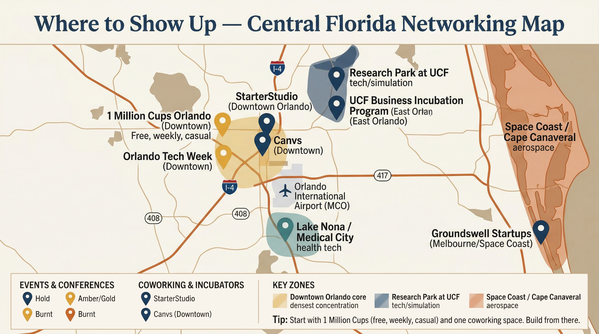

Central Florida — Your Market Opportunity
Central Florida — Your Market Opportunity
7 scenes — Media not yet generated
The Living Ecosystem, Where Every Current Carries You Forward
Deeper into the springs, the water moves with purpose. Side channels branch out, each one leading to a different part of the river system, but they all stay connected to the same source. Central Florida's startup ecosystem works the same way: different organizations serve different needs, but they feed the same network of founders, mentors, and opportunities.
What makes one U.S. city better than another for an international founder? It is not just the tax code. It is whether the ecosystem actually wants you there. The numbers matter (the next lesson covers them), but first you need to understand something harder to measure: whether a city truly supports founders who are new to the country. Central Florida does, and the evidence is in how the ecosystem behaves.
What this means day to day: founders here describe the same thing. People answer emails. Introductions happen within days, not months. Groups like SBDC, CFITO, and the Hispanic Chamber run active programs, show up at events, and follow up. That responsiveness matters enormously when you are new to the country and building from zero.
UCF as the Anchor — The Research Corridor Effect
Now, consider the institutional backbone. Every strong startup ecosystem has an anchor body. In Central Florida, it's UCF — and understanding how UCF shapes the ecosystem explains why this region works for founders.
In practice, UCF is a research engine tied to the industries around it. The Institute for Simulation and Training (IST) partners with defense contractors and government agencies, which is why 200+ simulation companies operate nearby. UCF's medical school at Lake Nona feeds the health tech ecosystem. Engineering and CS programs produce graduates who stay local — because the jobs are here.
For international founders, UCF BIP gives you a warm introduction to the ecosystem. Faculty consult on technical problems. Graduate students become interns and early hires. One Brazilian edtech founder found her first three customers, her lead developer, and her SBDC counselor through connections that started at the BIP welcome session.
The corridor from UCF through Research Park to Lake Nona concentrates most innovation activity. If your business touches simulation, health tech, or defense tech, proximity to this corridor gives you a structural advantage.
Did You Know?
Blue Spring State Park, just 30 minutes north of Orlando, is one of the largest winter gathering spots for West Indian manatees in the United States. Hundreds of manatees return each year because the spring maintains a constant 72 degrees Fahrenheit, creating a reliable, warm environment. Central Florida's business ecosystem has a similar draw: consistent support, year-round programs, and a welcoming environment that keeps international founders coming back and staying put.
The Startup Culture — Who's Here and How They Work
Here is where Central Florida stands out. Just as a healthy spring ecosystem thrives because its species cooperate rather than compete for the same resources, the startup culture here is team-minded, not cutthroat. Founders describe it as "pre-competitive": people share introductions, advice, and vendor recommendations freely because the ecosystem is still growing.
Founder Accessibility
In short, successful founders here are reachable. A cold LinkedIn message to a local CEO is more likely to get a response in Orlando than in San Francisco. Several BIP alumni got their first paying customer from a personal introduction at a local event.
Cross-Industry Connections
Because the ecosystem is mid-sized, founders meet people outside their sector regularly — a health tech founder discovers an application for her platform through a conversation with a simulation executive at a networking event.
Bilingual Business Community
Meetings happen in English and Spanish. Organizations like Prospera offer services entirely in Spanish. You don't have to wait until your English is perfect to start building relationships.
The "Gateway" Mindset
A food-tech founder from Ecuador launched in Orlando because the hospitality cluster gave her immediate customers : within two years she had expanded to Miami, Atlanta, and Houston.
Living Here — The Human Side of Relocation
Think about this: international founders relocate not just a company but often a family. Central Florida's quality of life is part of what makes it work for founders.
Family and Community
For context, Orlando's international community is large and established : grocery stores, restaurants, churches, and organizations serving Brazilian, Colombian, Venezuelan, Mexican, Puerto Rican, and other communities. Schools in Orange and Seminole counties have experience with families who speak more than one language. Bilingual children's doctors, immigration attorneys, and WhatsApp groups connect international families.
Lifestyle and Climate
Year-round outdoor living. Both coasts within 60-90 minutes. Tropical climate — a positive for Latin American founders who find northeastern winters challenging.
Practical Reality
You will need a car — public transit is limited. Factor vehicle costs into your planning. Summer heat is intense June through September. Manageable trade-offs.
Central Florida Industry Clusters — Your Opportunity Map
Key players: Lockheed Martin, Siemens Energy, EA Sports, countless startups
Growth rate: 15% job growth in tech sector over 5 years
Opportunities: Defense tech, simulation, gaming, SaaS, cybersecurity
UCF connection: One of the largest CS/engineering programs in the U.S.
Key players: AdventHealth, Orlando Health, Nemours Children's, Lake Nona Medical City
Growth rate: 20% projected growth in health tech
Opportunities: Medical devices, health IT, telehealth, clinical trials
UCF connection: College of Medicine and biotech research programs
Key players: Disney, Universal, SeaWorld, Marriott
Growth rate: $75B+ annual tourism economy
Opportunities: Hospitality tech, experiences, travel tech, food service innovation
UCF connection: Rosen College of Hospitality Management (top 5 globally)
Key players: Florida Power & Light, OUC, solar startups
Growth rate: Florida is #3 in U.S. for solar energy
Opportunities: Solar installation, energy storage, smart grid, sustainability consulting
UCF connection: Florida Solar Energy Center and sustainability research
Your Networking Map — Where to Show Up
Showing up in person is the fastest way to build your local network. Focus on these high-value events:
- Orlando Tech Association meetups — Monthly, casual gatherings with local tech founders and service providers. Go within two weeks of arriving.
- Starter Studio Demo Days — Accelerator showcase events connecting you with investors and mentors, even if you are not in the program.
- CFITO Trade Events — Bring together importers, exporters, and logistics partners for businesses bridging Latin America and the U.S.
- UCF BIP Workshops — Cover IP, pitch preparation, and market validation. The cohort format builds founder relationships.
Where you work shapes who you meet. Choosing a workspace inside the support ecosystem increases the chance of running into the right people:
- UCF Business Incubation facilities — Coworking space embedded in the support network with mentors and advisors nearby.
- Canvs at Creative Village — Downtown Orlando's coworking hub, popular with creative and tech startups.
- Orlando Public Library co-lab spaces — Free workspace and meeting rooms for budget-conscious founders.
Three relationships matter most in your first 90 days:
- Your SBDC counselor — Free and matched to your industry.
- Your UCF BIP coordinator — Points you to the right programs and people.
- A founder 6-12 months ahead of you — What they wish they had known is often more valuable than any workshop.

Latin America Focus — Community and Connection
- Prospera . Bilingual (Spanish/English) mentoring, training, and business planning for Hispanic entrepreneurs. They assign you a mentor who understands your background.
- Hispanic Chamber of Commerce of Metro Orlando . Business matchmaking programs pairing international founders with established local businesses. Annual events draw hundreds of bilingual professionals.
- Colombian, Brazilian, Venezuelan community groups . Active WhatsApp and social media networks that share job leads, vendor recommendations, and family resources. Ask your BIP cohort-mates or SBDC counselor for introductions.
- Bilingual professional services . Immigration attorneys, CPAs, and business consultants who work in Spanish and Portuguese are well-established in the Orlando metro area.
Reality Check — The Ecosystem Is Growing, Not Finished
But here's what you should also know. Central Florida's startup ecosystem is strong and getting stronger, but it is not Silicon Valley or New York. Be honest about what that means:
- Niche industries may have fewer local contacts. If you're in a very specialized vertical (quantum computing, advanced materials), the local network will be thinner. You may need to build national connections from day one.
- Venture capital is growing but still smaller than in major hubs. If you need Series A or B capital, you'll likely pitch investors in Miami, New York, or San Francisco — but you can live and operate here while doing so.
- "Based in Orlando" carries less brand weight with some investors and partners than "based in San Francisco." This gap is closing, but it exists. Let your traction speak louder than your zip code.
Reflect & Check Your Understanding
Reflection
Think about the networking touchpoints described in this lesson. Identify the THREE that are most relevant to your business and write down: (1) what you'd hope to get from each (a customer lead, a mentor, a partner, a hire), and (2) what you'd bring to the table — because networking works best when you offer value, not just ask for it. What expertise, perspective, or connection from your home market could be useful to someone already in the Central Florida ecosystem?
What Would You Do?
Question 1 of 3A Brazilian edtech founder is considering Central Florida. Which factor BEST illustrates the qualitative advantage of the region's startup culture?
While tax benefits, cost savings, and flight connectivity are genuine advantages (covered in the next lesson's data), the qualitative strength of Central Florida is its culture: UCF as an anchor institution, founders who respond to messages, bilingual organizations like Prospera and the Hispanic Chamber, and an ecosystem where introductions happen quickly. That collaborative environment is what makes the region work for international founders beyond what the numbers alone can show.
An international founder has just arrived in Central Florida and wants to build her local network quickly. Which combination of actions would give her the broadest initial connections?
Central Florida's ecosystem rewards physical presence and in-person connection. Attending local meetups introduces you to founders and hiring managers. Your SBDC counselor provides free, industry-specific guidance. And working from BIP space creates the chance encounters : with mentors, fellow founders, and program coordinators — that lead to introductions, partnerships, and early customers. Online networking is useful, but the ecosystem's strength is its accessibility in person.
A founder from Mexico is evaluating U.S. cities for her health tech startup. She wants to understand what makes UCF an 'anchor institution' in Central Florida's startup ecosystem. Which explanation best describes UCF's anchor role?
An anchor institution shapes the ecosystem around it. UCF's Institute for Simulation and Training partners with defense contractors (explaining 200+ simulation companies nearby). Its medical school feeds the Lake Nona health tech cluster. Engineering and CS programs produce graduates who stay local because industry jobs exist in the region. UCF BIP gives international founders a warm introduction to this entire network. The anchor effect is about research-to-market connections, not just size or office space.
Key Takeaway
Central Florida's advantage for international founders goes beyond cost savings and flight schedules. Like a spring-fed river that sustains an entire ecosystem, the region has a collaborative startup culture anchored by UCF, a bilingual business community that actively supports foreign founders, and a network of events, spaces, and organizations designed to help new founders build traction. The ecosystem is mid-sized and growing, which means you get access, fast replies, and cross-industry connections that are harder to find in larger, more competitive metros. Step into the current, build relationships early, and use the community as your launchpad.
What You Need to Know
- Describe the qualitative character of Central Florida's startup ecosystem and why it attracts international founders
- Explain UCF's role as an anchor institution and its connection to the regional research-to-market corridor
- Identify the networking events, community hubs, and people that matter for a new founder in the region